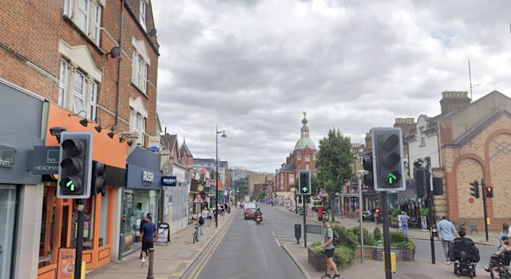

Shop local · Everyday
North Finchley High Road

The High Road is the practical spine of N12 — supermarkets, pharmacies, banks and everyday services within easy walking distance of Tally Ho Corner.
Supermarkets
Sainsbury's, North Finchley — a long-established supermarket on the High Road.
Waitrose — a short walk from the High Road, popular for a wider grocery shop.
Tesco Express / Tesco Extra — convenient stops for a quick top-up shop.
Pharmacies & health
Boots — pharmacy, health and beauty.
Superdrug — health, beauty and toiletries.
Cafés & everyday brands
Starbucks, North Finchley – High Road — a well-known coffee stop on the High Road.
WHSmith — newspapers, stationery and cards.